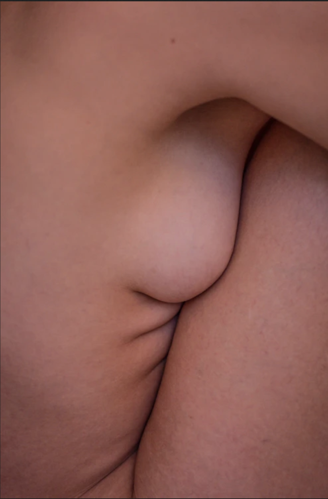
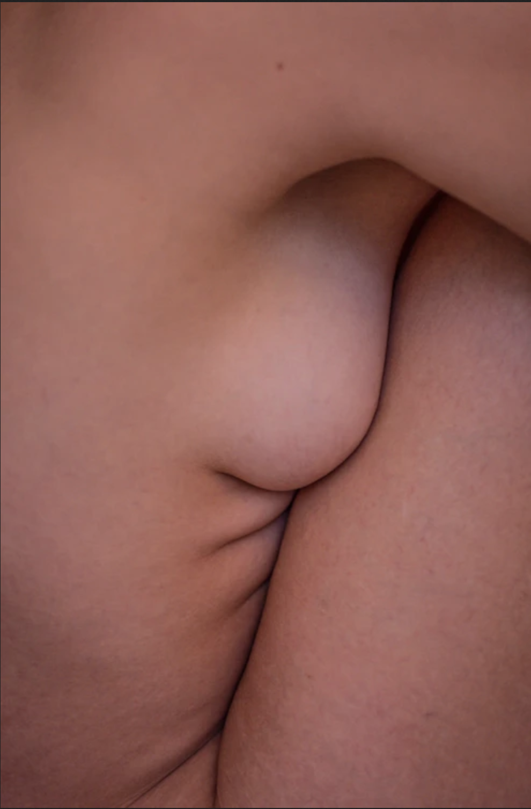

Gerelateerd aan artikel
Havermelk Foundation - Caramel
Ere Perez
€38,50
Quandong Green Booster Serum
Ere Perez
€36,00
Moringa All Beauty Cream
Ere Perez
€36,00
Summer Solstice Organic Eye Shadow Palette
Ere Perez
€59,50
Lois kruidenier | Woman Of Nourished Author, poet, mother & influencer: Lois Kruidenier speaks on honestly in writing & womanhood and how she came to be a clean beauty lover.
Shop NowAuteur, dichter, moeder en influencer Lois Kruidenier spreekt over eerlijkheid in haar schrijven en haar leven, de dualiteit van moederschap en sensuele vrouwelijkheid en hoe zij liefhebster van clean-beauty is geworden.
Read moreEre Perez
€38,50
Ere Perez
€36,00
Ere Perez
€36,00
Ere Perez
€59,50
 

Woman Of Nourished | Lois Kruidenier
Read more